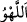
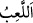
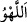
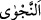
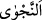

etmektedir. “__WORD__ dalgınlık ve gaflet demektir. Râgıb der ki: “__WORD__ (alay/eğlence)”;
insanı ilgilendiren ve onun için önemli olan hususlardan kendisini meşgul eden şeydir.”
Buna göre mânâ şöyledir: “İçine düştükleri sınırsız gaflet, işleri ve onların sonunun
nereye varacağını düşünmekten fazlasıyla yüz çevirmeleri sebebiyle kendilerine
Rab’lerinden gelen her yeni ikazı mutlaka eğlenerek, hafife alarak ve düşünmeden
dinlerler.
Burada “__WORD__ (oyun)”, “__WORD__ (eğlence)”den önce zikredilmiştir. Çünkü onların oyun ve
eğlenceye dalmalarının sebebi, Hak’tan gafil olmalarıdır. Alay ve istihzâ demek olan
“oyun”, eğlencenin (el-lehv) neticesidir. “el-Lehv” ise Hak’tan gafil olmak ve tefekkürü
terk etmektir.
Bazıları şöyle demişlerdir: “Eğlencede/gaflette olan kalb, dünya işleriyle meşgul olan
ve âhiret hallerinden gafil olan kalbdir.”
Vâsitî şöyle demiştir: “Onlar işlerin kaynağından ve varacağı yerden, başından ve
sonundan gaflettedir.”
Ey Rabbim, sonsuz kereminle
Gafil olan gönlü mâsivâdan uzak tut
“Hem” şirk ve mâsıyetle kendilerine aşırı zulmeden “o zâlimler şu gizli fısıltıyı
yaptılar:” “__WORD__ aslında sır/gizli söylemek demektir. Sonra iki kişi arasında olan gizli
konuşma/fısıltı yoluyla konuşulan söz anlamında isim yapılmıştır.
“__WORD__ (fısıltı)” zâten ancak gizli olduğu halde onların bunu gizli yapmalarının mânâsı,
onların bunu gizlemekte aşırı gitmeleri demektir.
Sanki burada “Onlar ne söylediler” diye sorulmuş ve cevap olarak şöyle denilmiştir:
“Onlar şöyle dediler: “Bu (Muhammed), sizin gibi” etten ve kandan; yemede, içmede,
bütün insanî ihtiyaçlarında ve hatta ölümde sizinle eşit “bir beşer olmaktan başka
nedir ki!” Ölümlü olmak da beşeriyyete mahsustur. Şu halde iddiâ ettiği gibi O’nda
peygamber olma özelliği yoktur.
“__WORD__ sözlükte derinin dış tarafı, “__WORD__ ise iç tarafı demektir. Üzerinde yün, kıl ve tüy
olan hayvanların aksine insanın derisi açıkta olması îtibâriyle insana ‘beşer’
denilmiştir. Beşer lafzının tekili de çoğulu da aynıdır. Kur’an’da insanın cüssesi ve dış
görünüşü ifâde edildiği zaman özel olarak “beşer” lafzı kullanılmıştır.
“Siz şimdi gözünüz göre göre büyüye mi kapılıyorsunuz?” Bu (Muhammed), ancak
sizin gibi bir insandır. Onun getirdiği şey -ki Kur’ân’ı kastediyorlar- sihirdir. Siz,
gerçek durumun böyle olduğunu bilmiyor musunuz da onun yanına gidiyorsunuz!? Onun
sihir olduğunu açıkça gördüğünüz halde can kulağıyla ve kabul etme arzusuyla
dinliyorsunuz, öyle mi?”
Onlar bu sözü, peygamberlerin ancak melek olmaları gerektiğine ve insanların elinde
zuhûr eden olağanüstü şeylerin ancak sihir, yâni hakîkati olmayan aldatmaca ve göz